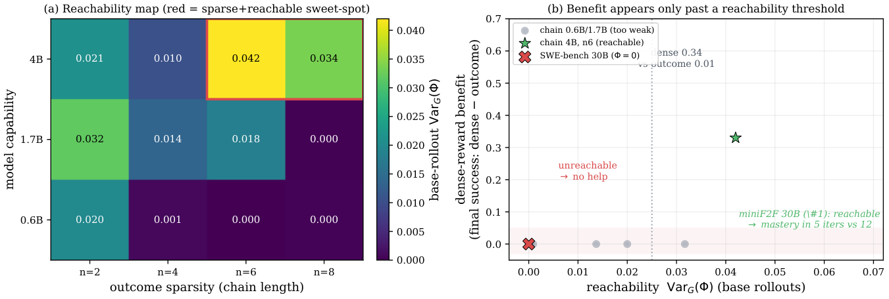

Uses Lean theorem proving on miniF2F as an RL testbed, with kernel-verified tactic steps and remaining-goal counts supplying dense progress rewards and penalties.
Abstract
Agents acting on our behalf in the real world (e.g. placing phone calls) must learn online from costly, often irreversible interactions rather than cheap simulator steps. Two things follow. First, deployability depends on the path, not only the outcome. An agent must respect outcome-neutral constraints such as not repeatedly calling an unresponsive user, respecting business hours, or completing required authentication constraints that outcome-based rewards cannot express, since violating them frequently improves apparent success. Second, because each interaction is expensive, the agent must learn efficiently from very few examples. Reinforcement learning from verifiable rewards (RLVR) is blind to both challenges: it optimizes solely on the outcome and wastes expensive rollouts on all-fail groups where group-relative advantage collapses to zero. Attempts to densify supervision by rewarding progress target the hard-to-verify direction. In contrast, real agentic environments can cheaply detect bad moves. Since group-relative advantage is equivalent to within-group variance, a dense signal helps only when it supplies variance the outcome lacks. A verifiable penalty on the path meets this condition reliably, while a progress potential helps only where partial progress is reachable. The resulting recipe "penalize the path, reward the outcome" achieves high task success with near-zero violations, where outcome-only training violates constraints on nearly every episode. We provide four design rules for effective penalties, including avoidance of the inaction trap that arises when a penalty is used in isolation.
Problem
Reinforcement learning from verifiable outcome rewards ignores path constraints that deployed agents must respect. It also wastes costly rollouts on all-fail groups, where group-relative advantage collapses to zero.
Approach
RLVP adds a second, per-action channel to the outcome reward. A deterministic rule engine penalizes verifiable bad moves and credits fulfilled obligations, and the two channels are normalized separately before being combined. The same credit, paid for verified progress, acts as a dense potential; for example, Lean kernel-verified reductions in remaining proof goals on miniF2F. The approach is evaluated on Lean theorem proving, TerminalBench, tau-bench, and SWE-bench, framed through a within-group variance analysis.
Results
Path penalties reach comparable task success with near-zero or far fewer violations (about 6x fewer on TerminalBench). Dense potentials help only where partial progress is reachable. On Lean miniF2F the aligned potential reduces iterations to 0.9 success and eliminates dead all-fail updates, while on SWE-bench it provides no signal. A pure penalty used alone collapses into an inaction trap.

Figure 13 : Reachability, measured cheaply, gates the dense-reward benefit. (a) \operatorname{Var}_{G}(\Phi) on base-policy rollouts (no training) over model capability \times outcome sparsity: it rises with capability and peaks in the sparse-but-reachable corner. (b) The benefit of a dense reward (final-success gap, dense - outcome) against that same probe: zero where \operatorname{Var}_{G}(\Phi)
Configuration
Iters to 0.9
AUC
Final success
Diverged
4B aligned potential (Muon)
4.4±0.5
0.90±0.03
1.00±0.00
0/5
4B outcome-only (Muon)
7.0±0.7
0.87±0.02
1.00±0.00
1/5
30B aligned potential (Muon)
5.4±1.0
0.90±0.02
1.00±0.00
0/5
30B outcome-only (Muon)
8.5±0.5
0.84±0.00
1.00±0.00
3/5
30B outcome-only (AdamW)
19.2±1.9
0.63±0.07
0.97±0.05
0/5
Theorem proving: aligned potential vs outcome-only (iterations to 0.9 success, AUC, final success, diverged seeds)